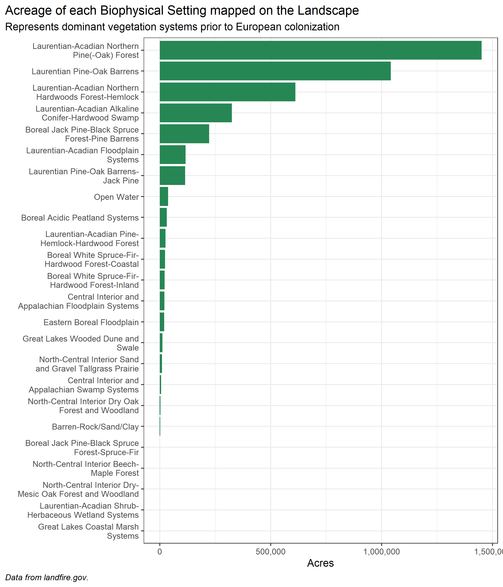
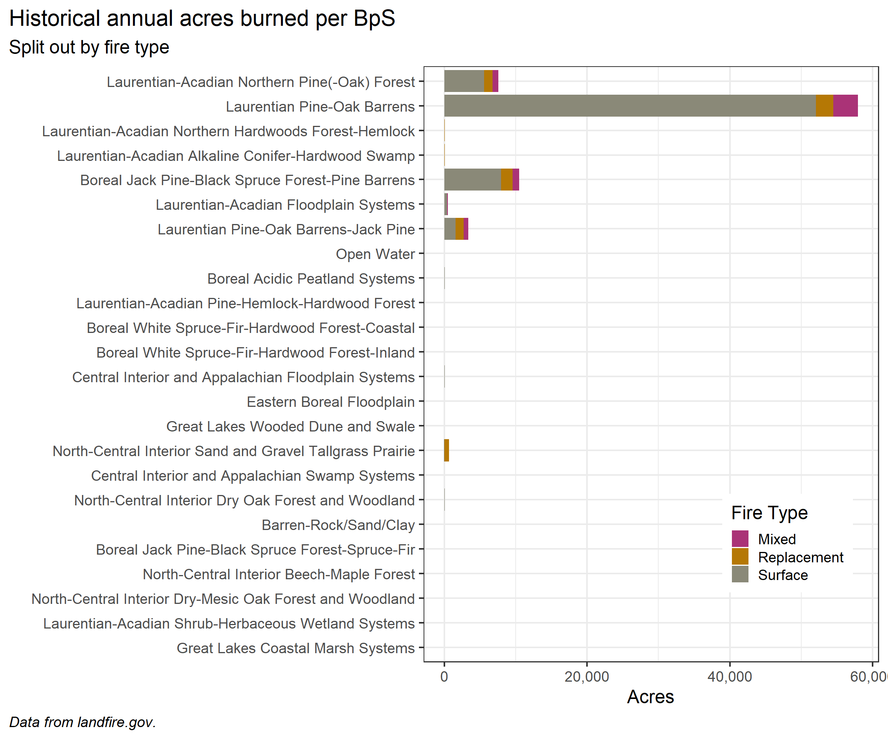

Last updated: 2022-03-09
Checks: 6 1
Knit directory: historicVScurrentFire/
This reproducible R Markdown analysis was created with workflowr (version 1.7.0). The Checks tab describes the reproducibility checks that were applied when the results were created. The Past versions tab lists the development history.
The R Markdown is untracked by Git. To know which version of the R Markdown file created these results, you’ll want to first commit it to the Git repo. If you’re still working on the analysis, you can ignore this warning. When you’re finished, you can run wflow_publish to commit the R Markdown file and build the HTML.
Great job! The global environment was empty. Objects defined in the global environment can affect the analysis in your R Markdown file in unknown ways. For reproduciblity it’s best to always run the code in an empty environment.
The command set.seed(20220309) was run prior to running the code in the R Markdown file. Setting a seed ensures that any results that rely on randomness, e.g. subsampling or permutations, are reproducible.
Great job! Recording the operating system, R version, and package versions is critical for reproducibility.
Nice! There were no cached chunks for this analysis, so you can be confident that you successfully produced the results during this run.
Great job! Using relative paths to the files within your workflowr project makes it easier to run your code on other machines.
Great! You are using Git for version control. Tracking code development and connecting the code version to the results is critical for reproducibility.
The results in this page were generated with repository version 0262f4c. See the Past versions tab to see a history of the changes made to the R Markdown and HTML files.
Note that you need to be careful to ensure that all relevant files for the analysis have been committed to Git prior to generating the results (you can use wflow_publish or wflow_git_commit). workflowr only checks the R Markdown file, but you know if there are other scripts or data files that it depends on. Below is the status of the Git repository when the results were generated:
Ignored files:
Ignored: .Rproj.user/
Untracked files:
Untracked: LMRNG.jpg
Untracked: OK.jpg
Untracked: analysis/LMRNG.jpg
Untracked: analysis/OK.jpg
Untracked: analysis/historicalFire.Rmd
Untracked: data/lmrng_cmbn.csv
Unstaged changes:
Modified: analysis/index.Rmd
Note that any generated files, e.g. HTML, png, CSS, etc., are not included in this status report because it is ok for generated content to have uncommitted changes.
There are no past versions. Publish this analysis with wflow_publish() to start tracking its development.
Vestibulum hendrerit ipsum eu diam sollicitudin, non tempus ipsum euismod. Phasellus eget elementum nibh. Pellentesque habitant morbi tristique senectus et netus et malesuada fames ac turpis egestas. Ut at bibendum neque. Vestibulum condimentum faucibus bibendum. Vestibulum ante ipsum primis in faucibus orci luctus et ultrices posuere cubilia curae; Cras pellentesque ultricies ante, at auctor erat.
As mentioned above we generated a big messy table for our exploration. You can explore the raw table here. It’s huge, even though the landscape is not that large.
The above data has too much information and is not formatted properly to explore historical fire regimes for our landscape. We did some wranging. Hit the “Code” button at the top-right of the page to see the code.
LANDFIRE data is designed for use over large areas. It’s a good idea to review initial outputs before proceeding. For example here we want to see which Biophysical Settings were most prevalent before we go to calculate historical fire regimes.

From this we see:
The historical annual acres burned chart will only represent the top three BpSs by acreage.

The Northwestern Great Plains Mixedgrass Prairie had a historical Mean Fire Return Interval of ~13 years, which in turn meant that ~8% of that ecosystem burned every year, or almost 6k acres for this landscape.
sessionInfo()R version 4.1.2 (2021-11-01)
Platform: x86_64-w64-mingw32/x64 (64-bit)
Running under: Windows 10 x64 (build 19043)
Matrix products: default
locale:
[1] LC_COLLATE=English_United States.1252
[2] LC_CTYPE=English_United States.1252
[3] LC_MONETARY=English_United States.1252
[4] LC_NUMERIC=C
[5] LC_TIME=English_United States.1252
attached base packages:
[1] stats graphics grDevices utils datasets methods base
other attached packages:
[1] forcats_0.5.1 dplyr_1.0.7 purrr_0.3.4 readr_2.1.2
[5] tidyr_1.2.0 tibble_3.1.6 ggplot2_3.3.5 tidyverse_1.3.1
[9] stringr_1.4.0 scales_1.1.1 DT_0.20
loaded via a namespace (and not attached):
[1] Rcpp_1.0.8 lubridate_1.8.0 assertthat_0.2.1 rprojroot_2.0.2
[5] digest_0.6.29 utf8_1.2.2 R6_2.5.1 cellranger_1.1.0
[9] backports_1.4.1 reprex_2.0.1 evaluate_0.14 highr_0.9
[13] httr_1.4.2 pillar_1.7.0 rlang_1.0.1 readxl_1.3.1
[17] rstudioapi_0.13 jquerylib_0.1.4 rmarkdown_2.11 labeling_0.4.2
[21] htmlwidgets_1.5.4 bit_4.0.4 munsell_0.5.0 broom_0.7.12
[25] compiler_4.1.2 httpuv_1.6.5 modelr_0.1.8 xfun_0.29
[29] pkgconfig_2.0.3 htmltools_0.5.2 tidyselect_1.1.1 workflowr_1.7.0
[33] fansi_1.0.2 crayon_1.4.2 tzdb_0.2.0 dbplyr_2.1.1
[37] withr_2.4.3 later_1.3.0 grid_4.1.2 jsonlite_1.7.3
[41] gtable_0.3.0 lifecycle_1.0.1 DBI_1.1.2 git2r_0.29.0
[45] magrittr_2.0.2 vroom_1.5.7 cli_3.1.1 stringi_1.7.6
[49] farver_2.1.0 fs_1.5.2 promises_1.2.0.1 xml2_1.3.3
[53] bslib_0.3.1 ellipsis_0.3.2 generics_0.1.2 vctrs_0.3.8
[57] tools_4.1.2 bit64_4.0.5 glue_1.6.1 crosstalk_1.2.0
[61] hms_1.1.1 parallel_4.1.2 fastmap_1.1.0 yaml_2.2.2
[65] colorspace_2.0-3 rvest_1.0.2 knitr_1.37 haven_2.4.3
[69] sass_0.4.0